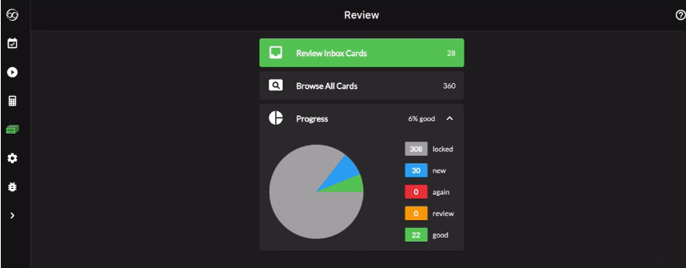
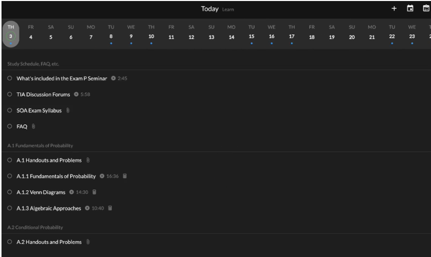

Using TIA to Prepare for Actuarial Exams
by Michael Li
A simple google search up on what the best actuarial exam preparation guides and you’ll likely end up with a few results – the Actex manuals, Coaching Actuaries, or The Infinite Actuary (TIA). Of these, I chose to use TIA for studying both Exams P and FM – and managed to pass them on my first try. At the time of writing, both the FM and P courses cost $200 with the student discount for a 6-month access to their course. This is on par with the pricing of Coaching Actuaries, but it is more expensive than what a typical study manual would cost. That being said, not only are you offered lessons on the material, the two courses also include a calculus review, flashcards, and individualized formula sheets and summary slides for each component of the exam. In terms of their practice exams, I found their practice exams to be pretty much on par with the actual exams offered by the SOA, if not slightly harder in certain aspects. Their formula sheets and flashcards also make for a great reviewing device for making sure those concepts stick in your head.

One of the major features of TIA that I found to be useful is the Today system. TIA will automatically set up a study schedule for you, based on the amount of study days that you have until the exam, how often you plan to study, and how many days you want to save for review. If you’re a fan of checklists like me, you’ll love this system. It is a great way of making the entire exam syllabus seem less daunting.

Another great feature of TIA is their forum feature. For every single lesson and every single exam, there is a forum where students can ask questions and instructors can answer and help them through any confusions they may have. In the few times I have used this, I received a reply to my questions within 24 hours, and their explanations were always fast and clear. They would also be happy to follow up with any additional explanations should I need them.
While I would consider TIA to be a great resource for studying, there are still some shortcomings with their platform. First of all, I found some of their Level 5 questions (as questions are rated from 1 to 5) unnecessarily difficult. These problems generally involved very complicated derivations that I do not think that you would do on the actual exam. I did not experience such problems while sitting for either of my exams. Another issue that I noticed was that starting this year, they no longer offer printable PDF problems available for you to work on. Their formula sheets, notes, and practice exams are printable, but the practice problems are now offered only online. TIA’s rationale is that they stopped offering printable problems due to the fact that the exam is now almost entirely administered by computer testing. While this is a fair reason, it is still something to be aware of before paying for access to their content.
Of course, what I want to absolutely stress here is that at the end of the day, it does not matter whichever exam resource you utilize, but what’s important is that you put in the time and the effort. TIA provides a variety of great resources to set you up for success, but it ultimately depends on you to put the time into studying to get that pass on the exam. Happy studying!